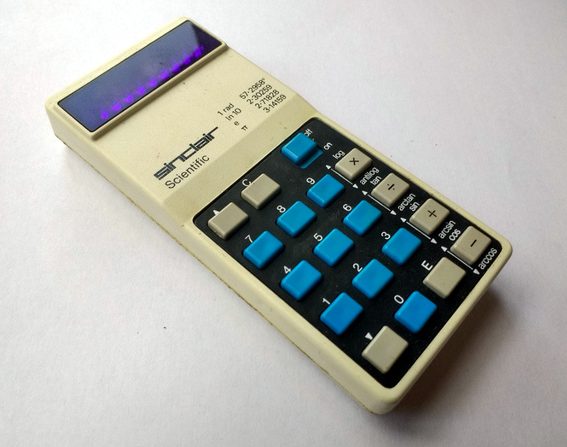

On notation.
In postfix calculators, the operators follow their operands, no equals key is required to force computation to occur and there are no requirement for the precedence rules required in infix notation. Brackets and parentheses are unnecessary: the user merely performs calculations in the order that is required, letting the automatic stack store intermediate results on the fly for later use.
| prefix notation | infix notation | postfix notation |
|---|---|---|
+ 1 * 2 3 |
1 + (2 * 3) |
1 2 3 * + |
For instance, one would write 3 4 + rather than 3 + 4. If there are multiple operations, operators are given immediately after their second operands. The expression written (5 + 10) * 3 in conventional notation would be written 10 5 + 3 * in reverse Polish notation.
| operation | 3 | 10 | 5 | + | * |
|---|---|---|---|---|---|
| stack | 3 | 10 | 5 | 15 | 45 |
| 3 | 10 | 3 | |||
| 3 |
The automatic stack permits the automatic storage of intermediate results for use later: this key feature is what permits Postfix calculators to easily evaluate expressions of arbitrary complexity: they do not have limits on the complexity of expression they can evaluate.
Mixfix
The mixfix notation is when a programming language is able to move between the prefix, infix and postfix notations. As examples, Maude and Modal(example) can define which notation to use inside the program.
<> ( Convert prefix and postfix to infix ) <> (add ?x ?y) (?x + ?y) <> (?x ?y add) (?x + ?y)
Multifix
Rejoice on the other hand, uses a strictly concatenative notation but the location of the operands do not matter at all. Considering that it is a multiset language, I've named this notation multifix.
+ x^3 y^4 ( also valid: x^3 + y^4, x^3 y^4 + ) x^y/[y^y +]

incoming: cccc tropical arithmetic pop2 basic concatenative uxntal rejoice rejoice devlog postscript modal lisp heol lispkit solresol